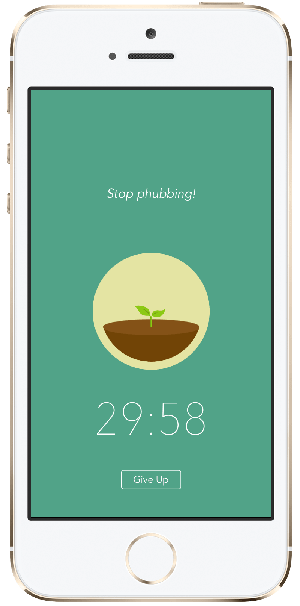

Terrance's Playground


In this article, I share my personal takeaways on being indistractable.
‘Indistractable’, a word composed of ‘in’, ‘distract’ and ‘able’. In the first glance, the word may mean ‘being able to not be distracted’. However, it is not a word we can find in any dictionary. In fact, it is a word created by Nir Eyal, an author writing on how to regain focus in doing a task. In his book ‘Indistractable’, he writes about how the ability to stay focused is a competitive advantage, in work and in life. He even referred the ability as ‘the skill of the century’.
Living in this time of information overload, it is undoubtedly very hard for us to not get distracted. An incoming call, a push notification from our shopping app, a message from our relatives in the family group chat, they all can disturb our workflow. Not to mention the cohesiveness that the current social media apps provide, it makes us even harder to not peek at our phones. So, do all these distractions come from our external environment? Not really. Studies have shown that, almost 90% of our distractions actually comes internally - they are from within ourselves.
Boredom in doing things we are not excited for. Laziness. Fear of being wanted. Fear of NOT being wanted. Unwillingness to try something new. Shame at our inability. Discomfort of stepping out of our comfort zones. Procrastination. They are all our distractions. When we constantly look at our devices every few minutes, we expect something to happen. We expect people to reach us. We are afraid of not noticing any urgent messages. We want to escape from uncomfortable situations we are in. That is the truth of distractions.
So, how do we tackle distractions? Here are some of my personal takeaways:
1. Improve our focus in small increments.
When it comes to concentration, we tend to think that it is only considered successful when we can concentrate over a long period of time. However, it is extremely difficult, if not deemed impossible, to ask a Year 5 student to study at his/her desk for two hours, without a break. The same applies to anyone who wish to improve their focus – start with small increments.
If we used to peek at our phone every five minutes, try to improve it to ten. Most of us may initially want for a significant improvement, so we do something extreme, like locking our phones in our drawer. That could backfire. Suppressing our desires to run away from distractions can only make things worse.
2. Make good use of the technology.
There are tons of ways we can use to help us better tackle distractions. Take the ‘Screen Time’ feature on an iPhone, for example. Screen Time allows users to keep track of their, obviously, screen time, so they get to know how much time they have spent on their devices. Users can keep track of the time they have spent on a certain app, they can even set a time limit for the app, so that a reminder pops up whenever the usage exceeds the preset time limit, and locks the app up. The similar feature is also on Android devices, known as ‘Digital Wellbeing’.
 Apple Screen Time lets us know how much time we and our kids spend on apps, websites, and more.
Apple Screen Time lets us know how much time we and our kids spend on apps, websites, and more.
 The Android Digital Wellbeing dashboard gives us a daily view of how often we check our phone and how frequently we use different apps.
The Android Digital Wellbeing dashboard gives us a daily view of how often we check our phone and how frequently we use different apps.
There is also a famous app named ‘Forest’, which helps users to increase productivity by eliminating distractions in an innovative way – it locks the screen up, and plants a new tree whenever a user successfully stays focused for a period of time. Say being productive and preserving the environment at the same time. Brilliant.

The Forest app
3. Allow reward after focusing.
Reward is very crucial in a habit-forming process. The experience we have at the end of whether a study, a workout, or an assignment, determines if we want to do it again next time. If we end our task in a rewarding way, there is a big chance we will do it again in the future.
And that is why we are addicted to surfing on the social media apps, because at the end of that action, it provides us a sense of belonging. Games are fun, because they give us a surge of dopamine. Binging on a drama can be satisfying too. So do smoking and drinking alcohol.
Allow ourselves to have some rewards at the end. If we want to binge on a drama, schedule it at the end of the task. It is not like we are torturing ourselves by not having the reward, we are just DELAYING the reward. And that can dramatically improve our productivity, by turning our distractions into motivations.
It would be an overstatement to say that this article concludes all the points on being indistractable. These are merely some of my opinions and thoughts. I hope this article can benefit you in a helpful way. If you want to learn more about being focused, I recommend some books such as ‘Atomic Habits’ by James Clear, and ‘Indistractable’ by Nir Eyal. You can also search for their insightful talks and interviews on any social platform.
Be focused and achieve higher.